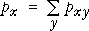

Examining the variables separately
Although our main interest is usually on the relationship between two categorical variables, it can also be of interest to examine the overall distribution of each variable separately. These are called the marginal distributions of the two variables.
The marginal distributions are determined by the row and column totals of a contingency table.
Rank and age in a university
| Rank | ||||||
|---|---|---|---|---|---|---|
| Age | Full professor |
Associate professor |
Assistant professor |
Instructor | Total | |
| Under 30 | 2 | 3 | 57 | 6 | 68 | |
| 30 to 39 | 52 | 170 | 163 | 17 | 402 | |
| 40 to 49 | 156 | 125 | 61 | 6 | 348 | |
| 50 and over | 220 | 83 | 39 | 4 | 346 | |
| Total | 430 | 381 | 320 | 33 | ||
The yellow highlighted values are the overall frequencies for each age category in the university — i.e. the marginal distribution of age. For example, there were (52+170+163+17) = 402 staff members who were aged 30 to 39.
Similarly, the green highlighted values give the marginal distribution of the ranks of the university staff. The diagram below illustrates the two marginal distributions graphically.
Click the checkbox Stacked to stack the four bars for each age group. The height of each combined bar is the sum of the heights (and therefore the sum of the frequencies) for the four ranks at that age, and therefore describes the marginal distribution of ages.
Uncheck Stacked, select Rank from the pop-up menu, then select Stacked again. This stacks the bars for each rank and therefore shows the marginal distribution of ranks.
In a similar way, the marginal proportions for the variables are obtained by adding the joint proportions across rows and down columns.
This can be expressed more generally as follows. If the joint proportion with row-category x and column-category y is denoted by pxy, then the overall proportion with row-category x is given by

and in a similar way, the marginal proportions for column-category y are

Rank and age in a university
| Rank | ||||||
|---|---|---|---|---|---|---|
| Age | Full professor |
Associate professor |
Assistant professor |
Instructor | Total | |
| Under 30 | 2/1164 | 3/1164 | 57/1164 | 6/1164 | 68/1164 | |
| 30 to 39 | 52/1164 | 170/1164 | 163/1164 | 17/1164 | 402/1164 | |
| 40 to 49 | 156/1164 | 125/1164 | 61/1164 | 6/1164 | 348/1164 | |
| 50 and over | 220/1164 | 83/1164 | 39/1164 | 4/1164 | 346/1164 | |
| Total | 430/1164 | 381/1164 | 320/1164 | 33/1164 | ||
The highlighted values are the overall proportions for each age (yellow) and rank (green) category in the university — i.e. the marginal distributions of these two variables.